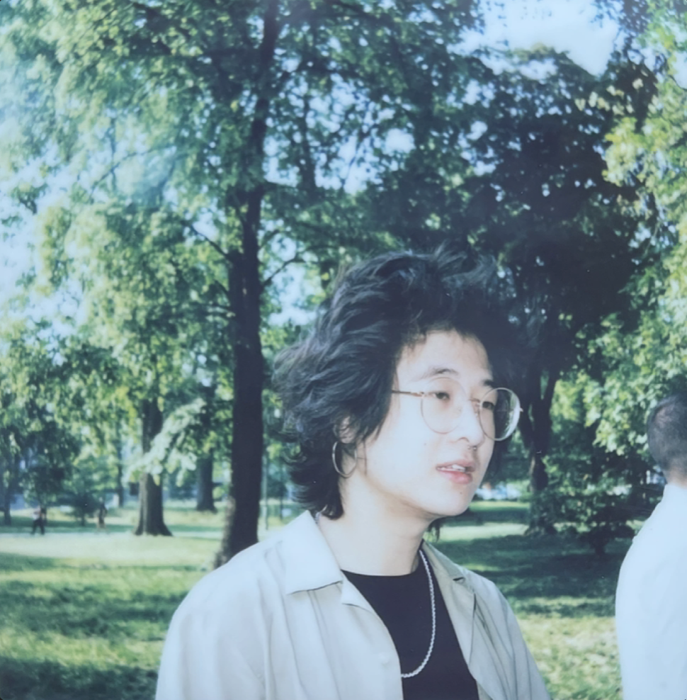

港美音樂家、作家、評論家和學者，哈佛神學院伊斯蘭學碩士生。我的雜文（英）談於藝術、文化、宗教、流散和政治話題。
論文、詩歌作品曾發表於The Trinity Review、UC Review、Canto Cuties等平台。一篇關於伊朗影藝的文章即將於Ajam Media Collective刊發。
> 簡歷
> 寫作樣本
> 講座樣本
> 發信
> 南方世界與原住民族文藝期刊目錄
Yokofilm, 2025
The Open Boat, 2024